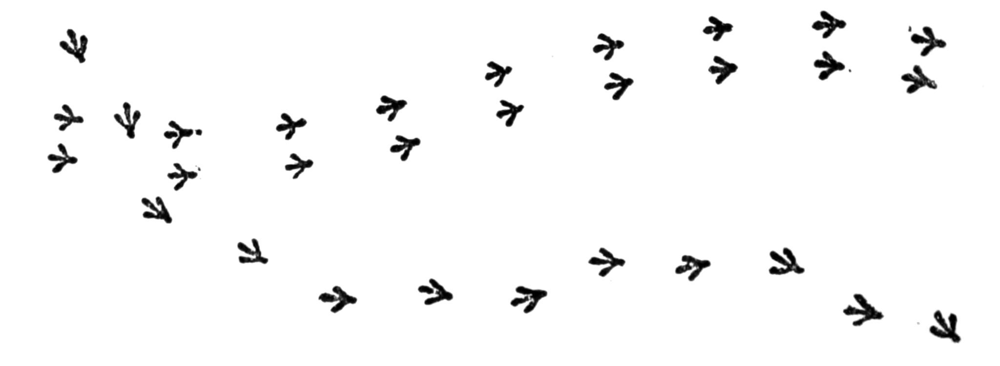

Software Automation Solutions
Streamline your business with custom automation and data management systems
What We Do
Process Automation
Eliminate repetitive tasks and reduce manual errors with intelligent workflow automation
Data Management
Design and implement scalable data systems that keep your information organized and accessible
Integration Solutions
Connect your existing tools and platforms to work seamlessly together
How We Work
Discovery
We analyze your workflows to identify automation opportunities
Build
Custom solutions designed specifically for your business needs
Test
Rigorous testing ensures reliability before deployment
Deploy
Seamless integration with options for ongoing support and monitoring
About
The Prepared Dodo specializes in building custom software automation solutions and data management systems for small-to-medium sized businesses. Founded by Samuel Morris, we combine technical expertise with practical business understanding to deliver solutions that actually work.
Let's Talk.
Ready to automate your business processes?